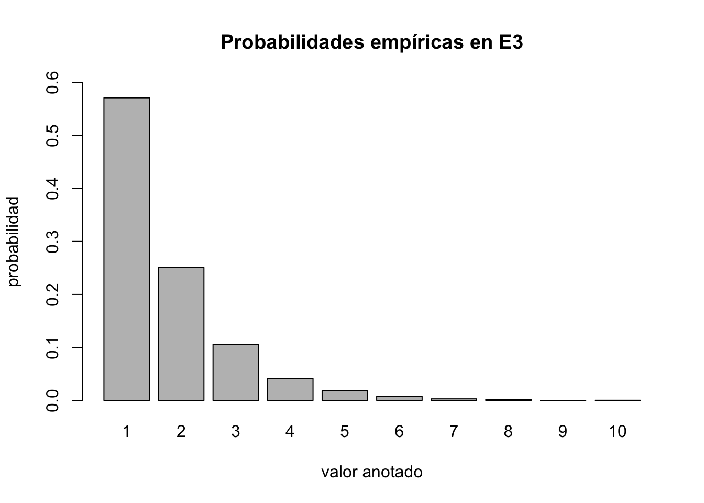
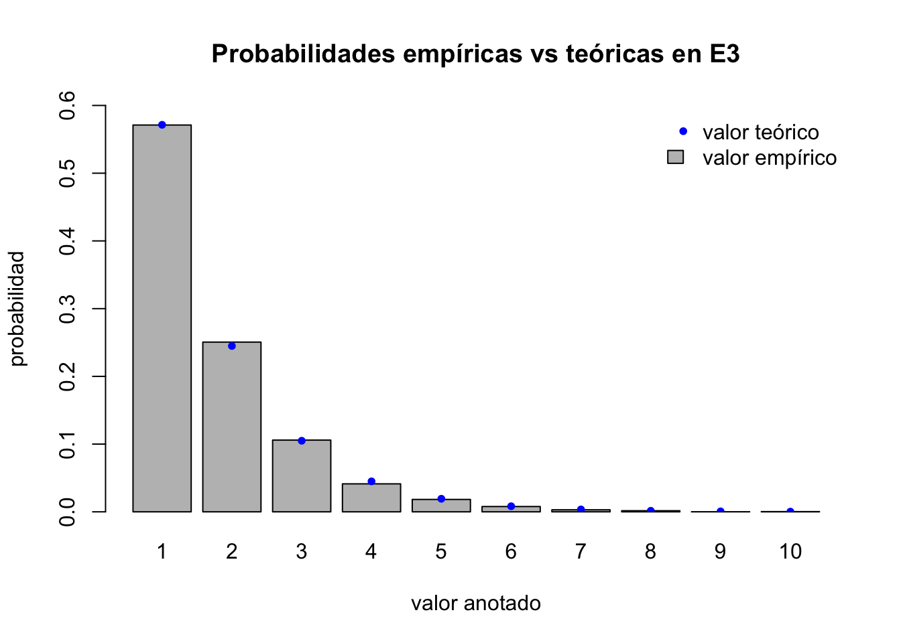

eE2 <- function() {
BOLAS <- c(rep("Azul", 4), rep("Verde", 3))
return(sum(sample(BOLAS, 5, replace = FALSE) == "Azul"))
}EC1
\(\epsilon_2\)
Extraemos cinco bolas, al azar, una a la vez y sin reemplazo, de una bolsa con 4 bolas azules y 3 bolas verdes indistinguibles salvo por su color y anotamos el número de bolas azules extraídas.
Modelaremos el experimento, mediante \((\Omega_2, \mathcal{F}_2, \mathbb{P}_2)\) donde:
\[\Omega_2 = \{2, 3, 4\}\]
Simulación de \(\epsilon_2\)
Podremos simular el experimento con la siguiente función en R
Tomemos una muestra de 10000 observaciones
X2 <- replicate(10000, eE2())Veamos los resultados de \(X_2\)
table(X2)X2
2 3 4
2858 5770 1372 Las propabilidades empíricas de \(\epsilon_2\) con una muestra de 10000 observaciones
barplot(table(X2)/length(X2),
ylim = c(0, 0.6),
main = "Probabilidades empíricas en E2",
xlab = "valor anotado",
ylab = "probabilidad"
)Probalidad teórica en \(\epsilon_2\)
Para determinar la probabilidad teórica nos vamos a apoyar de expermiento accesorio \(\epsilon_a\)
\(\epsilon_a\)
Extraemos cinco bolas, al azar, todas a la vez, de una bolsa con 4 bolas azules y 3 bolas verdes indistinguibles salvo por su color y anotamos el número de bolas azules extraídas.
Dado que ambos experimientos comparten el espacio muestral \(\Omega_2 = \{2, 3, 4\} = \Omega_a\) y el orden en el que se sacan las bolas se vuelve irrelevante en \(\epsilon_a\) , podemos decir que:
\[\mathbb{P}_2(\{x\}) = \mathbb{P}_a(\{x\})\]
Donde:
\[ \mathbb{P}_2(\{x\}) = \tfrac { (Cantidad\ de\ formas\ de\ sacar\ x\ bolas\ azules\ de\ 4) * (Cantidad\ de\ formas\ de\ sacar\ sacar\ 5-x\ bolas\ verdes\ de\ 3) } { Cantidad\ de\ formas\ de\ sacar\ 5\ bolas\ de\ una\ bolsa\ con\ 7\ bolas }, \forall\ x \in \mathbb{Z}, x \colon 2 \leq x \leq 4 \]
o en términos de combinatorias:
\[ \mathbb{P}_2(\{x\}) = \tfrac { \binom{4}{x}*\binom{3}{5-x} } { \binom{7}{5} } \]
Ahora implementemos el código en R para calcular la probabilidad teóríca
.tE2 <- function(x) {
bolas <- 5
azules <- 4
verdes <- 3
n <- azules + verdes
return (
(choose(azules, x)*choose(verdes, bolas - x)) / choose(n, bolas)
)
}
tE2 = Vectorize(.tE2)Calculemos las probalidades teóricas:
BP <- barplot(table(X2)/length(X2),
ylim = c(0, 0.6),
main = "Probabilidades empíricas vs teóricas en E2",
xlab = "valor anotado",
ylab = "probabilidad"
)
points(BP, tE2(2:4), col = "blue",pch = 20)
legend("topright", legend = c("valor teórico", "valor empírico"), col = c("blue", "gray"), fill = c(NA, "gray"), pch = c(20, NA), border = c(NA, "black"), bty = "n")\(\epsilon_3\)
Extraemos bolas al azar con reemplazo, de una bolsa con 4 bolas azules y 3 bolas verdes indistinguibles salvo por su color, hasta obtener la primera bola azul. Contamos y anotamos el número de veces que se tuvo que extraer bolas.
Modelaremos el experimento, mediante \((\Omega_3, \mathcal{F}_3, \mathbb{P}_3)\) donde:
\[\Omega_3 = \{\ \forall x \in \mathbb{N}\ \}\]
Simulación de \(\epsilon_3\)
Podremos simular el experimento con la siguiente función en R
eE3 <- function() {
BOLAS <- c(rep("Azul", 4), rep("Verde", 3))
cont <- 0
azules <- 0
while (azules <= 0) {
azules <- sum(sample(BOLAS, 1, replace = TRUE) == "Azul")
cont <- cont + 1 # Vamos realizando el conteo de bolas extraidas
}
return(cont)
}Tomemos una muestra de 10000 observaciones
X3 <- replicate(10000, eE3())Veamos los resultados de \(X_3\)
table(X3)X3
1 2 3 4 5 6 7 8 9 10
5711 2506 1059 413 183 78 30 16 1 3 Las propabilidades empíricas de \(\epsilon_3\) con una muestra de 10000 observaciones
barplot(table(X3)/length(X3),
ylim = c(0, 0.6),
main = "Probabilidades empíricas en E3",
xlab = "valor anotado",
ylab = "probabilidad"
)
Probalidad teórica en \(\epsilon_3\)
Para determinar la probabilidad teórica nos vamos a apoyar de expermiento accesorio \(\epsilon_0\)
\(\epsilon_0\)
Extraemos una bola al azar, de una bolsa con 4 bolas azules y 3 bolas verdes indistinguibles salvo por su color y anotamos el color que sale. Donde:
\[\Omega_0 = \{Azul, Verde\}\] \[\mathbb{P}_0(\{Azul\}) = \tfrac{4}{7}\] \[\mathbb{P}_0(\{Verde\}) = \tfrac{3}{7}\]
Para calcular \(\mathbb{P}_3(\{x\}) = probabilidad\ de\ sacar\ una\ bola\ azul\ en\ el\ intento\ x\) debemos tener en cuenta que en los intento de \(1\ a\ x-1\) salió una bola verde
\[\mathbb{P}_3(\{x\}) = \mathbb{P}_0(\{Verde\})^{x-1}*\mathbb{P}_0(\{Azul\})\]
Ahora implementemos el código en R para calcular la probabilidad teóríca
.tE3 <- function(x) {
azules <- 4
verdes <- 3
n <- azules + verdes
return (
((verdes/n)^(x-1))*(azules/n)
)
}
tE3 = Vectorize(.tE3)Calculemos las probalidades teóricas:
BP <- barplot(table(X3)/length(X3),
ylim = c(0, 0.6),
main = "Probabilidades empíricas vs teóricas en E3",
xlab = "valor anotado",
ylab = "probabilidad"
)
points(BP, tE3(1:length(table(X3))), col = "blue",pch = 20)
legend("topright", legend = c("valor teórico", "valor empírico"), col = c("blue", "gray"), fill = c(NA, "gray"), pch = c(20, NA), border = c(NA, "black"), bty = "n")
\(\epsilon_4\)
Extraemos bolas al azar sin reemplazo, de una bolsa con 4 bolas azules y 3 bolas verdes indistinguibles salvo por su color, hasta obtener la primera bola azul. Contamos y anotamos el número de veces que se tuvo que extraer bolas.
Modelaremos el experimento, mediante \((\Omega_4, \mathcal{F}_4, \mathbb{P}_4)\) donde:
\[\Omega_4 = \{1,2,3,4\}\]
Simulación de \(\epsilon_4\)
Podremos simular el experimento con la siguiente función en R
eE4 <- function() {
BOLAS <- c(rep("Azul", 4), rep("Verde", 3))
cont <- 0
azules <- 0
while (azules <= 0) {
bola <- sample(BOLAS, 1, replace = FALSE)
if (bola == "Azul") {
azules <- azules + 1
}
BOLAS <- BOLAS[BOLAS != bola | duplicated(BOLAS != bola)] # Vamos retirando de la bolsa la bola extraída
cont <- cont + 1 # Vamos realizando el conteo de bolas extraidas
}
return(cont)
}Tomemos una muestra de 10000 observaciones
X4 <- replicate(10000, eE4())Veamos los resultados de \(X_4\)
table(X4)X4
1 2 3 4
5715 2892 1104 289 Las propabilidades empíricas de \(\epsilon_4\) con una muestra de 10000 observaciones
barplot(table(X4)/length(X4),
ylim = c(0, 0.6),
main = "Probabilidades empíricas en E4",
xlab = "valor anotado",
ylab = "probabilidad"
)Probalidad teórica en \(\epsilon_4\)
Como el experimento es sin reemplazo por cada bola extraída se va modificando la cantidad de bolas y por consiguiente la probabilidad de sacar una bola azul (y verde).
Para: \[\mathbb{P}_4(\{1\}) = \tfrac{4}{7}\] Ahora para \(\mathbb{P}_4(\{2\})\) sabemos que la primera tuvo que salir verde: \[\mathbb{P}_4(\{2\}) = \tfrac{3}{7} * \tfrac{4}{6}\] Podemos aplicar la misma lógica para \(\mathbb{P}_4(\{3\})\) y \(\mathbb{P}_4(\{4\})\): \[\mathbb{P}_4(\{3\}) = \tfrac{3}{7} * \tfrac{2}{6} * \tfrac{4}{5}\]
\[\mathbb{P}_4(\{4\}) = \tfrac{3}{7} * \tfrac{2}{6} * \tfrac{1}{5} * \tfrac{4}{4}\]
Generalizando:
\[\mathbb{P}_4(\{x\}) = \tfrac{P_{3,x-1}}{P_{7,x-1}} * \tfrac{4}{7-(x-1)}, \forall\ x \in \mathbb{Z}, x \colon 2 \leq x \leq 4\]
Ahora implementemos el código en R para calcular la probabilidad teóríca
.tE4 <- function(x) {
return((factorial(3)/factorial(3-(x-1))/(factorial(7)/factorial(7 - (x-1)))) * 4/(7 - (x-1)))
}
tE4 = Vectorize(.tE4)Calculemos las probalidades teóricas:
BP <- barplot(table(X4)/length(X4),
ylim = c(0, 0.6),
main = "Probabilidades empíricas vs teóricas en E4",
xlab = "valor anotado",
ylab = "probabilidad"
)
points(BP, tE4(1:length(table(X4))), col = "blue",pch = 20)
legend("topright", legend = c("valor teórico", "valor empírico"), col = c("blue", "gray"), fill = c(NA, "gray"), pch = c(20, NA), border = c(NA, "black"), bty = "n")\(\epsilon_5\)
Extraemos bolas al azar con reemplazo, de una bolsa con 4 bolas azules y 3 bolas verdes indistinguibles salvo por su color, hasta obtener la tercera bola azul. Contamos y anotamos el número de veces que se tuvo que extraer bolas.
Modelaremos el experimento, mediante \((\Omega_5, \mathcal{F}_5, \mathbb{P}_5)\) donde:
\[\Omega_5 = \{\ \forall x \in \mathbb{N}\ x \colon x\ge3 \}\]
Simulación de \(\epsilon_5\)
Podremos simular el experimento con la siguiente función en R
eE5 <- function() {
BOLAS <- c(rep("Azul", 4), rep("Verde", 3))
cont <- 0
azules <- 0
while (azules < 3) {
azules <- azules + sum(sample(BOLAS, 1, replace = TRUE) == "Azul")
cont <- cont + 1 # Vamos realizando el conteo de bolas extraidas
}
return(cont)
}Tomemos una muestra de 10000 observaciones
X5 <- replicate(10000, eE5())Veamos los resultados de \(X_5\)
table(X5)X5
3 4 5 6 7 8 9 10 11 12 13 14 15 16 17 24
1936 2316 2021 1519 944 547 344 184 95 42 22 12 13 2 2 1 table(X5)/length(X5)X5
3 4 5 6 7 8 9 10 11 12 13
0.1936 0.2316 0.2021 0.1519 0.0944 0.0547 0.0344 0.0184 0.0095 0.0042 0.0022
14 15 16 17 24
0.0012 0.0013 0.0002 0.0002 0.0001 Las propabilidades empíricas de \(\epsilon_5\) con una muestra de 10000 observaciones
barplot(table(X5)/length(X5),
ylim = c(0, 0.27),
main = "Probabilidades empíricas en E5",
xlab = "valor anotado",
ylab = "probabilidad"
)Probalidad teórica en \(\epsilon_5\)
Para determinar la probabilidad teórica en \(\epsilon_6\) necesitamos que:
\(\epsilon_b\): La extracción número \(x\) sea una bola azul.
\(\epsilon_c\): En las \(x-1\) extracciones anteriores, deben haber salido exactamente 2 bolas azules.
\(\epsilon_b\) y \(\epsilon_c\) necesitan ocurrir simultaneamente en nuestro experimento, por lo que:
\[\mathbb{P}(\epsilon_5) = \mathbb{P}(\epsilon_b\ \cap\ \epsilon_c)\] Dado que \(\epsilon_b\) y \(\epsilon_c\) son eventos independientes: \[\mathbb{P}(\epsilon_5) = \mathbb{P}(\epsilon_b) * \mathbb{P}(\epsilon_c)\]
Para \(\epsilon_b\) sabemos que: \[\mathbb{P}_b(\{x\}) = \mathbb{P}(\{Azul\}) = \tfrac{4}{7}\] Ya que al ser al ser un expermimento con reemplazo, el experimento no se ve afectado por la cantidad de intentos.
En \(\epsilon_c\) podemos determinar la probalidad como:
\[ \mathbb{P}_c({x}) = (cantidad\ de\ maneras\ de\ obtener\ 2\ bolas\ de\ x-1) * \mathbb{P}(\{Azul\})^{2} * \mathbb{P}(\{Verde\})^{x-3} \] En terminos de combinatoria: \[ \mathbb{P}_c({x}) = \binom{x-1}{2} * \mathbb{P}(\{Azul\})^{2} * \mathbb{P}(\{Verde\})^{x-3} \] Si reemplazamos podemos determinar que:
\[ \begin{align*} \mathbb{P}(\epsilon_5) &= \mathbb{P}(\epsilon_b) * \mathbb{P}(\epsilon_c)\\ &= \mathbb{P}(\{Azul\} * \binom{x-1}{2} * \mathbb{P}(\{Azul\})^{2} * \mathbb{P}(\{Verde\})^{x-3} \\ &= \binom{x-1}{2} * \mathbb{P}(\{Azul\})^{3} * \mathbb{P}(\{Verde\})^{x-3} \end{align*} \]
Ahora implementemos el código en R para calcular la probabilidad teóríca
.tE5 <- function(x) {
return(
choose(x-1, 2) * ((4/7)^3) * (3/7)^(x-3)
)
}
tE5 = Vectorize(.tE5)Calculemos las probalidades teóricas:
levesX5 = 3:18
BP <- barplot(table(factor(X5, levels = levesX5, ordered = TRUE))/length(X5),
ylim = c(0, 0.26),
main = "Probabilidades empíricas vs teóricas en E5",
xlab = "valor anotado",
ylab = "probabilidad"
)
points(BP, tE5(levesX5), col = "blue",pch = 20)
legend("topright", legend = c("valor teórico", "valor empírico"), col = c("blue", "gray"), fill = c(NA, "gray"), pch = c(20, NA), border = c(NA, "black"), bty = "n")\(\epsilon_6\)
Extraemos bolas al azar sin reemplazo, de una bolsa con 4 bolas azules y 3 bolas verdes indistinguibles salvo por su color, hasta obtener la tercera bola azul. Contamos y anotamos el número de veces que se tuvo que extraer bolas.
Modelaremos el experimento, mediante \((\Omega_6, \mathcal{F}_6, \mathbb{P}_6)\) donde:
\[\Omega_6 = \{3,4,5,6\}\]
Simulación de \(\epsilon_6\)
Podremos simular el experimento con la siguiente función en R
eE6 <- function() {
BOLAS <- c(rep("Azul", 4), rep("Verde", 3))
cont <- 0
azules <- 0
while (azules < 3) {
bola <- sample(BOLAS, 1, replace = FALSE)
if (bola == "Azul") {
azules <- azules + 1
}
BOLAS <- BOLAS[BOLAS != bola | duplicated(BOLAS != bola)] # Vamos retirando de la bolsa la bola extraída
cont <- cont + 1 # Vamos realizando el conteo de bolas extraidas
}
return(cont)
}Tomemos una muestra de 10000 observaciones
X6 <- replicate(10000, eE6())Veamos los resultados de \(X_6\)
table(X6)X6
3 4 5 6
1142 2611 3387 2860 Las propabilidades empíricas de \(\epsilon_6\) con una muestra de 10000 observaciones
barplot(table(X6)/length(X6),
ylim = c(0, 0.4),
main = "Probabilidades empíricas en E6",
xlab = "valor anotado",
ylab = "probabilidad"
)Probalidad teórica en \(\epsilon_6\)
Como el experimento es sin reemplazo por cada bola extraída se va modificando la cantidad de bolas y por consiguiente la probabilidad de sacar una bola azul (y verde).
Si analizamos el experimento, necesitamos que:
\(A\): Que en los intentos \(x-1\) intentos deben haber salidos exactamente 2 bolas azules
\(B\): Que la bola en el intento \(x\) sea azul.
Tanto \(A\) y \(B\) deber ocurrir simultaneamente. Por lo que \(\mathbb{P}_6(\{x\}) = \mathbb{P}(A)*\mathbb{P}(B)\) ya que son eventos independientes.
\[ \mathbb{P}_6(\{x\}) = \tfrac{\binom{4}{2}*\binom{3}{x-3}}{\binom{7}{x-1}}*\tfrac{2}{7-(x-1)} \] Ahora implementemos el código en R para calcular la probabilidad teóríca
.tE6 <- function(x) {
return(
((choose(4, 2)*choose(3, x-3))/choose(7, x-1)) * (2/(7-x+1))
)
}
tE6 = Vectorize(.tE6)Calculemos las probalidades teóricas:
BP <- barplot(table(X6)/length(X6),
ylim = c(0, 0.4),
main = "Probabilidades empíricas vs teóricas en E6",
xlab = "valor anotado",
ylab = "probabilidad"
)
points(BP, tE6(3:6), col = "blue",pch = 20)
legend("topright", legend = c("valor teórico", "valor empírico"), col = c("blue", "gray"), fill = c(NA, "gray"), pch = c(20, NA), border = c(NA, "black"), bty = "n")